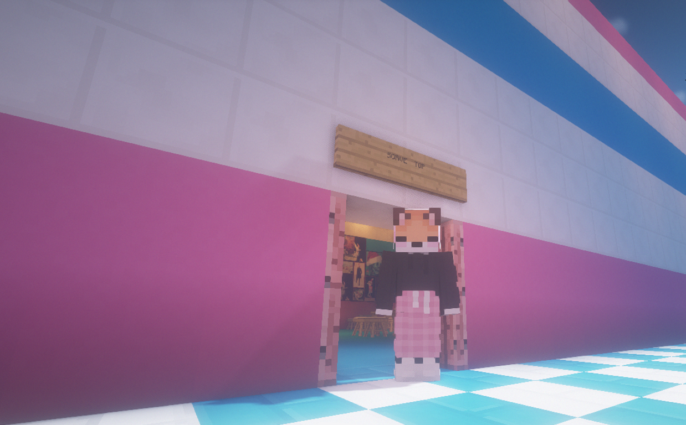
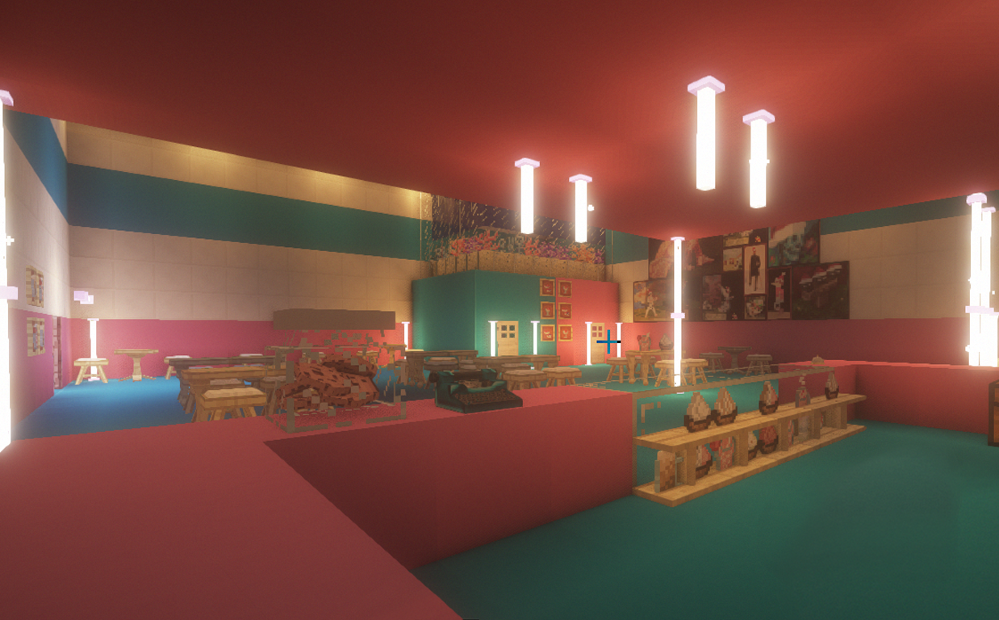
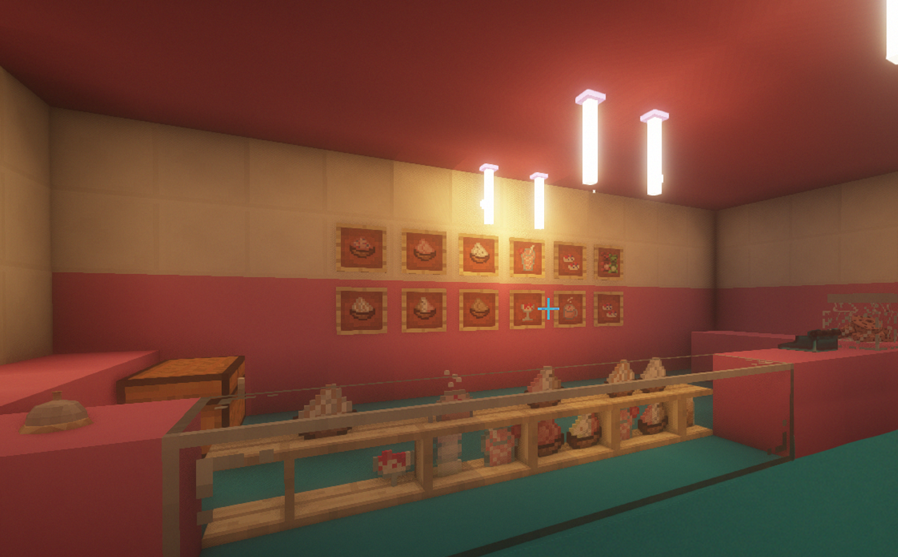
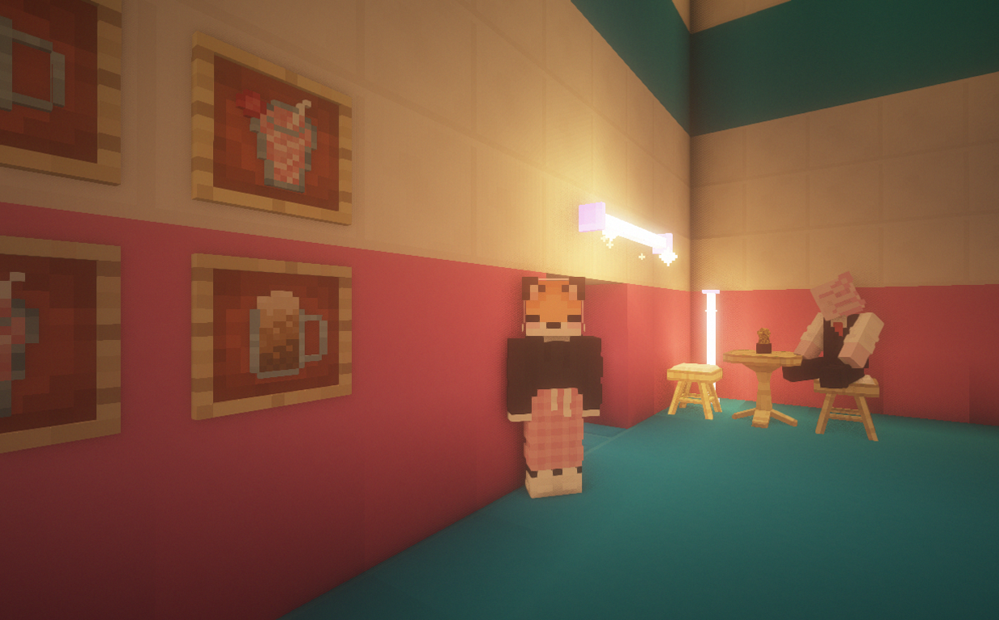
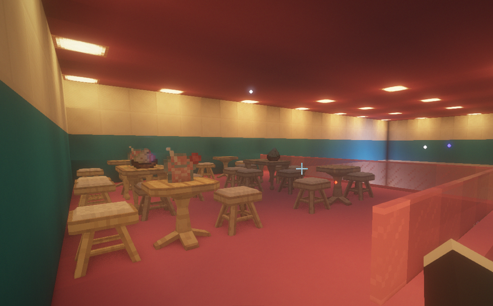
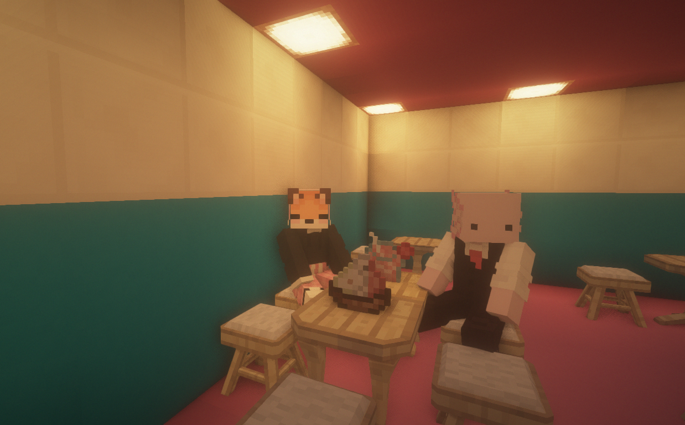
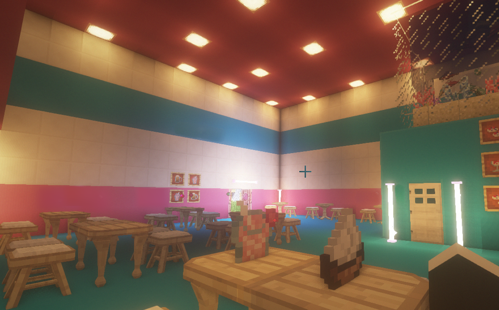
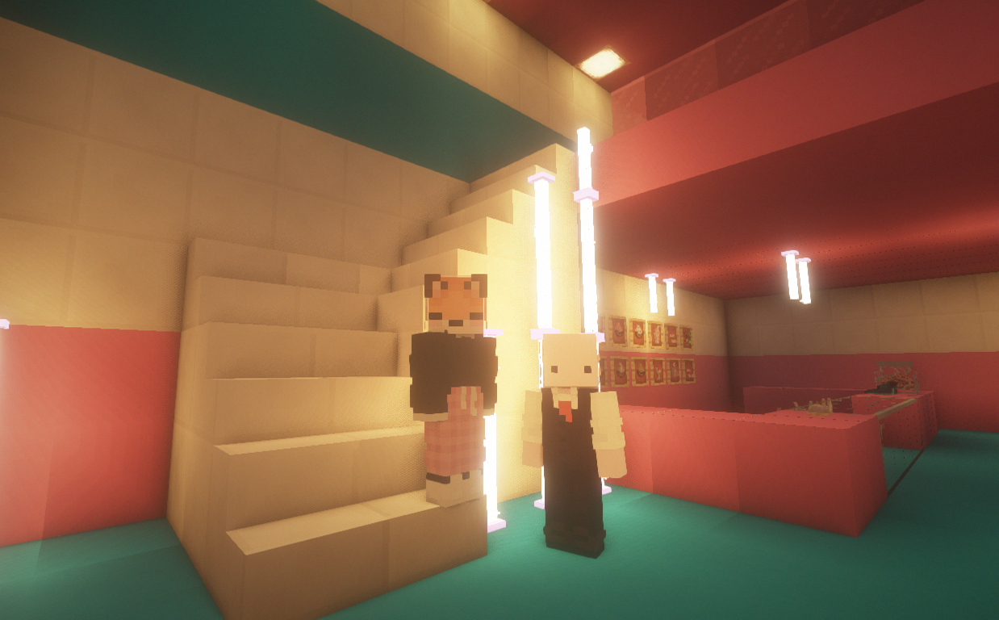

Sobre
O Início
A sorvetop está a 10 anos no mercado entregando produtos de qualidade e preço acessível para todos os publicos, começando apenas com 10 funcionarios e duas caminhonetes. Temos a nossa cede localizada em Porto Alegre, na avenida Assis Brasil.
Com mais de 3 quiosques nos shoppings Iguatemi, Bourbon Country, Bourbon Wallig, e diversos outros shoppings por RJ, SP e RS temos como objetivo expandir cada vez mais para multiplicarmos nosso alcance com nosso serviço de delivery e atendimento local.
Atualmente
Com o atual problema do corona virus, nossa empresa deu um grande foco ao serviço de delivery e tenta passar o máximo de segurança aos nossos clientes com nossos entregadores tomando o devido cuidado, assim como nossos atendentes no serviço local.
Fabricação
Trabalhamos com equipamentos automatizados para produção em larga escala. Nossa fabricação é própria pois prezamos por nossa qualidade, produzindo milhares de picolés e litros de sorvetes diariamente. Uma empresa consolidada no mercado por entregar qualidade em cada produto.
Saiba Mais
Locais Disponíveis
Fisicamente
✦ Independência - Porto Alegre
✦ Jardim Carvalho - Porto Alegre
✦ Sarandi - Porto Alegre
✦ Bela Vista - Porto Alegre
✦ Moinhos de Vento - Porto Alegre
✦ Menino Deus - Porto Alegre
✦ Vila Nova - Cachoeirinha
✦ Vila Amélia - Cachoeirinha
✦ Jardim Guedala - São Paulo
✦ Vila Nova Conceição - São Paulo
✦ Pinheiros - São Paulo
✦ Recreio - Rio de Janeiro
✦ Vila da Penha - Rio de Janeiro
✦ Bota Fogo - Rio de Janeiro
Delivery
✦ Porto Alegre
✦ Cachoeirinha
✦ Gravataí
✦ Pelotas
✦ Canoas
✦ São Leopoldo
✦ Santa Cruz
✦ São Paulo
✦ Bauru
✦ Jundiaí
✦ Niterói
✦ Nova Iguaçu
✦ Mesquita
✦ Petrópolis
Cardápio
Galeria
- 
- 
- 
- 
- 
- 
- 
- 